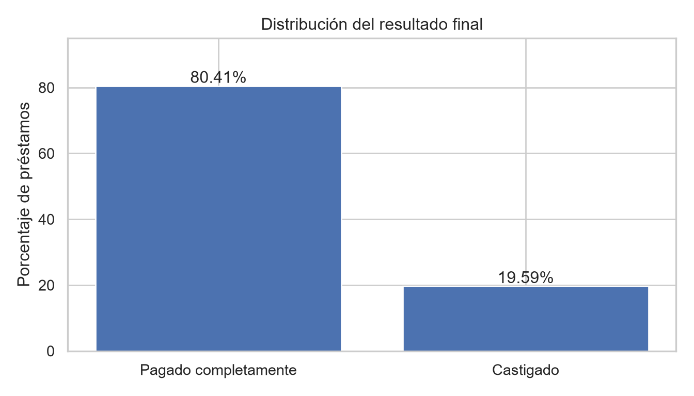
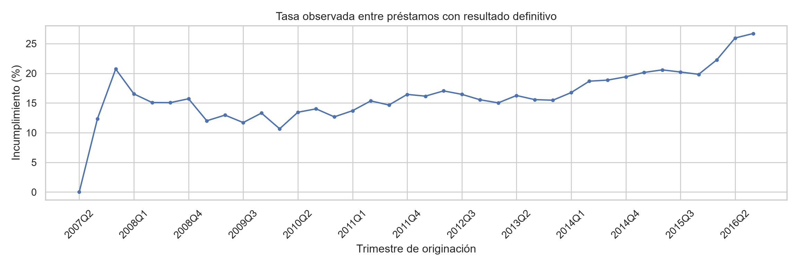
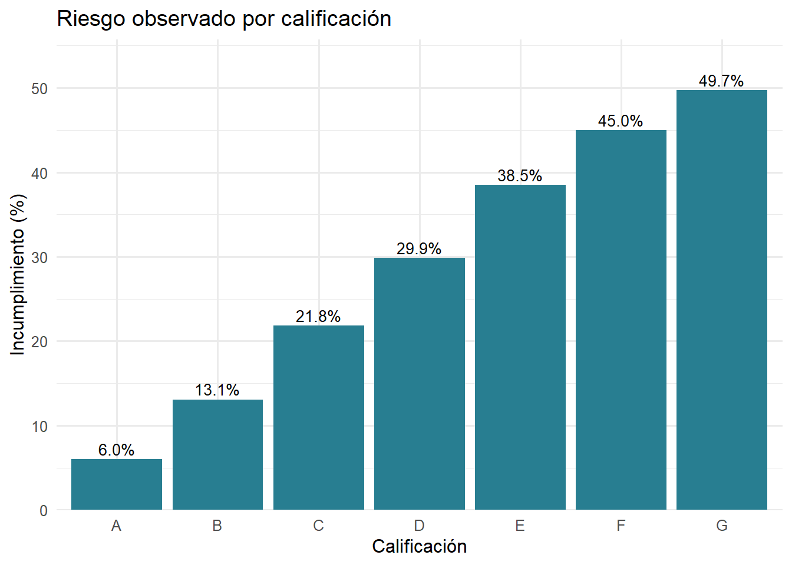
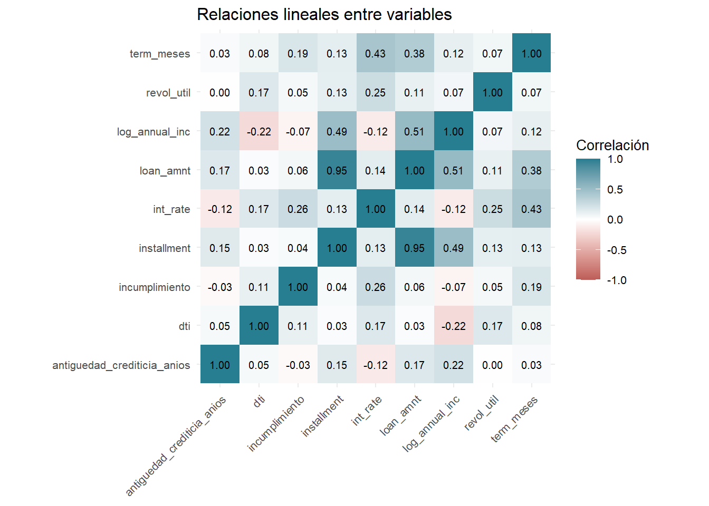
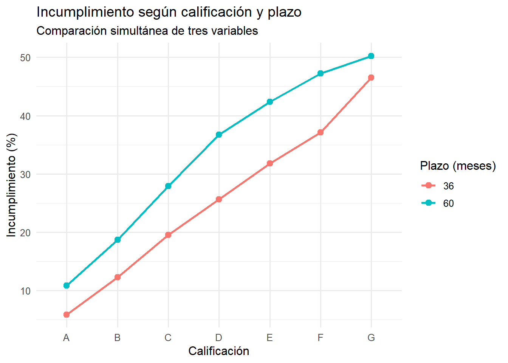
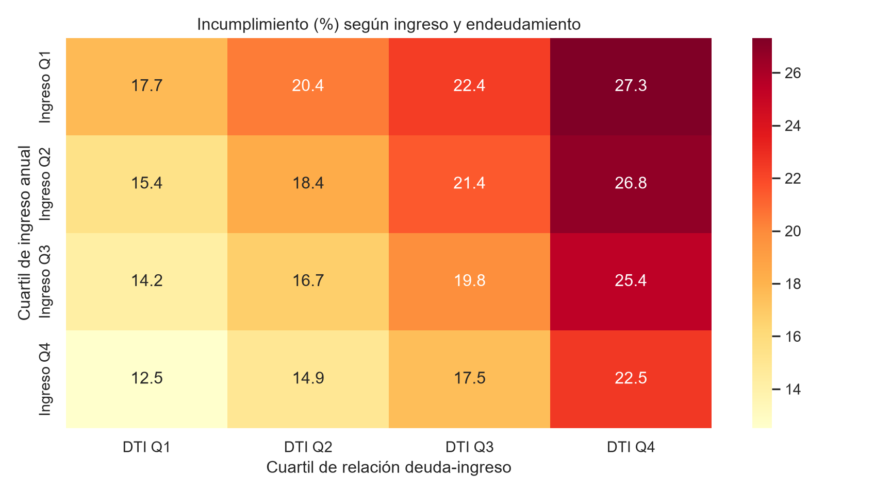

Parte C: Análisis exploratorio univariado, bivariado y multivariado
Autor/a
Cristian Guzman
Parte C: Análisis exploratorio del riesgo crediticio
C.1 Objetivos, preguntas y criterios metodológicos
Este análisis utiliza exclusivamente los préstamos del conjunto de entrenamiento. El conjunto de prueba se mantiene reservado para la evaluación final del modelo. Las relaciones observadas son asociaciones, no efectos causales.
Preguntas de investigación:
¿Qué proporción de préstamos terminó en incumplimiento?
¿Cómo varían las características de los préstamos y los prestatarios?
¿Qué diferencias se observan por calificación, plazo y situación financiera?
¿Cómo se relacionan varias características simultáneamente con el incumplimiento?
¿Qué patrones temporales aparecen y cuáles podrían deberse al sesgo de maduración?
Herramientas: Python (pandas, numpy, matplotlib, seaborn) para lectura de Parquet, agregaciones y exportación; R (dplyr, ggplot2, readr, tidyr) para análisis estadístico, contrastes descriptivos y visualización. Quarto utiliza Knitr + Reticulate para ejecutar los dos lenguajes en el mismo documento.
C.2 Configuración reproducible de Python y R
Código
from pathlib import Pathimport numpy as npimport pandas as pdimport matplotlib.pyplot as pltimport seaborn as snsfrom IPython.display import displaysns.set_theme(style="whitegrid")RUTA = Path("../data/processed/train_prepared.parquet")SALIDA = Path("../outputs/eda")SALIDA.mkdir(parents=True, exist_ok=True)ifnot RUTA.exists():raiseFileNotFoundError("Primero ejecuta 02_limpieza_python.qmd y genera train_prepared.parquet")df = pd.read_parquet(RUTA)df["fecha_emision"] = pd.to_datetime(df["fecha_emision"], errors="coerce")if"incumplimiento"notin df:raiseKeyError("No existe la variable objetivo 'incumplimiento'")print(f"Registros de entrenamiento: {len(df):,}")
Registros de entrenamiento: 1,026,281
Código
print(f"Columnas: {df.shape[1]}")
Columnas: 33
Código
print(f"Período: {df['fecha_emision'].min():%Y-%m} a {df['fecha_emision'].max():%Y-%m}")
El archivo de entrenamiento contiene préstamos emitidos antes del corte temporal de prueba. El uso exclusivo de esta muestra evita examinar anticipadamente los resultados del conjunto reservado para la evaluación final.
C.3 Diccionario de variables seleccionadas
Variable
Significado
Tipo
incumplimiento
1: préstamo castigado; 0: pagado completamente
Binaria
loan_amnt
Monto solicitado del préstamo
Numérica
term_meses
Duración contractual en meses
Numérica/discreta
int_rate
Tasa de interés anual, expresada en porcentaje
Numérica
installment
Cuota periódica del préstamo
Numérica
annual_inc
Ingreso anual declarado
Numérica
dti
Relación entre deuda e ingreso
Numérica
grade
Calificación crediticia asignada por LendingClub
Ordinal
home_ownership
Situación de vivienda
Categórica
verification_status
Estado de verificación de ingresos
Categórica
purpose
Propósito declarado del préstamo
Categórica
fecha_emision
Fecha de originación del préstamo
Temporal
Nota: la tasa de interés y la calificación ya incorporan decisiones previas del prestamista. Las comparaciones no permiten afirmar que estas características causen el incumplimiento.
estado prestamos porcentaje
0 Pagado completamente 825214 80.41
1 Castigado 201067 19.59
Código
fig, ax = plt.subplots(figsize=(7, 4))ax.bar(tabla_objetivo["estado"], tabla_objetivo["porcentaje"])ax.set_ylabel("Porcentaje de préstamos")ax.set_title("Distribución del resultado final")for i, v inenumerate(tabla_objetivo["porcentaje"]): ax.text(i, v +1, f"{v:.2f}%", ha="center")ax.set_ylim(0, 95)
(0.0, 95.0)
Código
plt.tight_layout()plt.show()

C.4.2 Distribución de características numéricas
Código
numericas_descriptivas = ["loan_amnt", "int_rate", "installment", "annual_inc", "dti", "revol_util", "term_meses"]existentes = [c for c in numericas_descriptivas if c in df.columns]resumen_univariado = df[existentes].describe(percentiles=[.05, .25, .5, .75, .95]).Tresumen_univariado["faltantes_pct"] = df[existentes].isna().mean() *100resumen_univariado.to_csv(SALIDA /"resumen_univariado.csv", index_label="variable")display(resumen_univariado.round(2))
Los histogramas muestran el comportamiento de cada variable de manera individual. Para facilitar la lectura se muestran valores hasta el percentil 99; no se eliminan registros del conjunto utilizado en el análisis.
C.4.3 Frecuencias de categorías
Código
for variable in ["grade", "term_meses", "home_ownership", "verification_status", "purpose"]: tabla = df[variable].value_counts(dropna=False).rename_axis(variable).reset_index(name="prestamos") tabla["porcentaje"] = tabla["prestamos"] /len(df) *100 tabla.to_csv(SALIDA /f"frecuencias_{variable}.csv", index=False)print(f"\n{variable}") display(tabla.head(12).round(2))
grade
grade prestamos porcentaje
0 B 302426 29.47
1 C 281830 27.46
2 A 182884 17.82
3 D 152078 14.82
4 E 74805 7.29
5 F 25924 2.53
6 G 6334 0.62
term_meses
term_meses prestamos porcentaje
0 36 778150 75.82
1 60 248131 24.18
home_ownership
home_ownership prestamos porcentaje
0 MORTGAGE 506369 49.34
1 RENT 413715 40.31
2 OWN 106003 10.33
3 OTHER 144 0.01
4 NONE 45 0.00
5 ANY 5 0.00
verification_status
verification_status prestamos porcentaje
0 Source Verified 392122 38.21
1 Verified 332244 32.37
2 Not Verified 301915 29.42
purpose
purpose prestamos porcentaje
0 debt_consolidation 602361 58.69
1 credit_card 232953 22.70
2 home_improvement 62560 6.10
3 other 53367 5.20
4 major_purchase 21033 2.05
5 small_business 12046 1.17
6 car 10676 1.04
7 medical 10555 1.03
8 moving 6766 0.66
9 vacation 6116 0.60
10 house 4537 0.44
11 wedding 2292 0.22
C.5 Análisis bivariado: diferencias entre grupos
C.5.1 Incumplimiento según características categóricas
Interpretación: la comparación por calificación permite observar si las categorías de mayor riesgo asignadas por LendingClub también presentan mayor frecuencia de incumplimiento. No equivale a demostrar causalidad.
C.5.2 Comparación de medianas según resultado
Código
numericas = ["loan_amnt", "int_rate", "installment", "annual_inc", "log_annual_inc", "dti", "revol_util", "antiguedad_crediticia_anios"]numericas = [c for c in numericas if c in df.columns]medianas = df.groupby("incumplimiento")[numericas].median().Tmedianas.columns = ["pagado_mediana", "castigado_mediana"]medianas["diferencia_castigado_menos_pagado"] = medianas["castigado_mediana"] - medianas["pagado_mediana"]medianas.to_csv(SALIDA /"medianas_por_resultado.csv", index_label="variable")display(medianas.round(2))
fig, ax = plt.subplots(figsize=(12, 4))ax.plot(range(len(cohortes)), cohortes["tasa_incumplimiento"], marker="o", markersize=3)posiciones = np.arange(0, len(cohortes), max(1, len(cohortes)//10))ax.set_xticks(posiciones, cohortes.iloc[posiciones]["trimestre"], rotation=45)ax.set(xlabel="Trimestre de originación", ylabel="Incumplimiento (%)", title="Tasa observada entre préstamos con resultado definitivo")plt.tight_layout()plt.show()

Advertencia de sesgo: solo se conservaron préstamos pagados completamente o castigados. En cohortes recientes, los préstamos que siguen activos no aparecen en el denominador. Por ello, una variación temporal no debe interpretarse como la evolución del riesgo de todos los préstamos originados.
C.7 Correlaciones entre variables numéricas
Código
cols = ["incumplimiento", "loan_amnt", "int_rate", "installment", "log_annual_inc", "dti", "revol_util", "term_meses", "antiguedad_crediticia_anios"]cols = [c for c in cols if c in df.columns]correlaciones = df[cols].corr(numeric_only=True)correlaciones.to_csv(SALIDA /"matriz_correlaciones.csv", index_label="variable")display(correlaciones["incumplimiento"].sort_values(ascending=False).to_frame("correlacion_con_incumplimiento").round(3))
La correlación cuantifica la asociación lineal, pero no indica causalidad ni garantiza una relación útil para predecir por sí sola. Además, variables como int_rate, grade y sub_grade reflejan la evaluación crediticia previa del prestamista.
C.8 Análisis estadístico en R
Esta sección demuestra el uso real de R, separado del procesamiento y exportación de datos realizado en Python. R importa los resúmenes generados en ../outputs/eda/, evitando volver a cargar más de un millón de filas en memoria.
C.8.1 Frecuencias y distribución de incumplimiento con dplyr y ggplot2
ggplot(objetivo_r, aes(x = estado, y = porcentaje, fill = estado)) +geom_col(width = .65, show.legend =FALSE) +geom_text(aes(label =sprintf("%.2f%%", porcentaje)), vjust =-0.5) +scale_y_continuous(limits =c(0, 95)) +labs(title ="Resultado final de los préstamos", x =NULL, y ="Porcentaje") +theme_minimal(base_size =12)
knitr::kable(plazo_r |>select(categoria, prestamos, tasa_incumplimiento), digits =2,caption ="Incumplimiento por plazo")
Incumplimiento por plazo
categoria
prestamos
tasa_incumplimiento
36
778150
15.27
60
248131
33.14
Código
ggplot(grado_r, aes(categoria, tasa_incumplimiento)) +geom_col(fill ="#287e91") +geom_text(aes(label =sprintf("%.1f%%", tasa_incumplimiento)), vjust =-0.35, size =3.5) +scale_y_continuous(expand =expansion(mult =c(0, .12))) +labs(title ="Riesgo observado por calificación", x ="Calificación", y ="Incumplimiento (%)") +theme_minimal(base_size =12)

C.8.3 Interpretación estadística de correlaciones con R
Código
corr_r <-read_csv(file.path(carpeta_eda, "matriz_correlaciones.csv"), show_col_types =FALSE)nombre_primera <-names(corr_r)[1]corr_larga <- corr_r |>rename(variable_fila =all_of(nombre_primera)) |>pivot_longer(-variable_fila, names_to ="variable_columna", values_to ="correlacion")ggplot(corr_larga, aes(variable_fila, variable_columna, fill = correlacion)) +geom_tile() +geom_text(aes(label =sprintf("%.2f", correlacion)), size =2.7) +scale_fill_gradient2(low ="#bd5c58", mid ="white", high ="#287e91", midpoint =0, limits =c(-1, 1)) +coord_equal() +labs(title ="Relaciones lineales entre variables", x =NULL, y =NULL, fill ="Correlación") +theme_minimal(base_size =10) +theme(axis.text.x =element_text(angle =45, hjust =1))

C.9 Análisis exploratorio multivariado
En esta sección se examina cómo cambia el incumplimiento al considerar más de una característica explicativa a la vez. El propósito es explorar patrones conjuntos, no ajustar un nuevo modelo ni volver a utilizar el conjunto de prueba.
C.9.1 Cruce entre calificación y plazo del préstamo
Las diferencias entre celdas deben leerse junto con el tamaño de cada grupo. No debe atribuirse automáticamente al plazo una diferencia que podría estar relacionada con otras características de los préstamos.
C.9.2 Interacción entre plazo, calificación e incumplimiento en R
Código
cruce_r <-read_csv(file.path(carpeta_eda, "cruce_grade_plazo.csv"), show_col_types =FALSE)cruce_r <- cruce_r |>filter(grade %in% LETTERS[1:7]) |>mutate(grade =factor(grade, levels = LETTERS[1:7]),term_meses =factor(term_meses))ggplot(cruce_r, aes(grade, tasa_incumplimiento, color = term_meses, group = term_meses)) +geom_line(linewidth = .9) +geom_point(size =2.5) +labs(title ="Incumplimiento según calificación y plazo",subtitle ="Comparación simultánea de tres variables",x ="Calificación", y ="Incumplimiento (%)", color ="Plazo (meses)") +theme_minimal(base_size =12)

C.9.3 Ingreso, endeudamiento e incumplimiento
Se forman segmentos utilizando los cuartiles del conjunto de entrenamiento. Este procedimiento permite comparar simultáneamente ingreso anual, relación deuda-ingreso e incumplimiento, sin seleccionar umbrales basados en la muestra de prueba.
fig, ax = plt.subplots(figsize=(9, 5))mat = tabla_segmentos.pivot(index="cuartil_ingreso", columns="cuartil_dti", values="tasa_incumplimiento")sns.heatmap(mat, annot=True, fmt=".1f", cmap="YlOrRd", ax=ax)ax.set(xlabel="Cuartil de relación deuda-ingreso", ylabel="Cuartil de ingreso anual", title="Incumplimiento (%) según ingreso y endeudamiento")plt.tight_layout()plt.show()

Los cuartiles son grupos de tamaño similar dentro de cada variable. Ingreso Q1 representa el 25% inferior de ingresos; DTI Q4, el 25% superior de relación deuda-ingreso. Los resultados describen asociaciones conjuntas y no efectos independientes o causales.
porcentaje =100* df["incumplimiento"].mean()print(f"1. La tasa de incumplimiento entre los préstamos resueltos del entrenamiento fue {porcentaje:.2f}%.")
1. La tasa de incumplimiento entre los préstamos resueltos del entrenamiento fue 19.59%.
Código
for categoria in ["A", "G"]: fila = cruce[cruce["grade"].eq(categoria)]ifnot fila.empty: total = fila["prestamos"].sum() tasa =100* fila["incumplidos"].sum() / totalprint(f"2. Calificación {categoria}: {tasa:.2f}% de incumplimiento ({total:,} préstamos).")
2. Calificación A: 6.01% de incumplimiento (182,884 préstamos).
2. Calificación G: 49.73% de incumplimiento (6,334 préstamos).
Código
for plazo in [36, 60]: serie = df.loc[df["term_meses"].eq(plazo), "incumplimiento"]iflen(serie):print(f"3. Plazo {plazo} meses: {100*serie.mean():.2f}% de incumplimiento ({len(serie):,} préstamos).")
3. Plazo 36 meses: 15.27% de incumplimiento (778,150 préstamos).
3. Plazo 60 meses: 33.14% de incumplimiento (248,131 préstamos).
Código
print("4. Revisar el mapa de calor de calificación y plazo y los segmentos de ingreso y DTI antes de interpretar sus patrones.")
4. Revisar el mapa de calor de calificación y plazo y los segmentos de ingreso y DTI antes de interpretar sus patrones.
Código
print("5. Estas observaciones no demuestran causalidad ni permiten inferir directamente el riesgo de préstamos activos.")
5. Estas observaciones no demuestran causalidad ni permiten inferir directamente el riesgo de préstamos activos.
C.11 Conclusiones y límites del EDA
El análisis univariado permite conocer las distribuciones, frecuencias y posibles valores extremos. El bivariado identifica diferencias entre préstamos pagados y castigados, y el multivariado explora patrones conjuntos por calificación, plazo, ingreso y endeudamiento.
Principales precauciones:
Se observan únicamente préstamos con resultado final conocido: existe riesgo de sesgo de selección y maduración, especialmente en cohortes recientes.
Las diferencias entre grupos no prueban causalidad.
La calificación y la tasa de interés ya reflejan la evaluación del prestamista.
Los grupos pequeños deben interpretarse con cautela; las tablas incluyen su tamaño.
Los patrones descriptivos no sustituyen la evaluación predictiva fuera de muestra realizada en las fases 04 y 05.
C.12 Archivos generados y utilidad para Power BI
Los resultados agregados se exportan a ../outputs/eda/, incluyendo:
distribucion_objetivo.csv: volumen y porcentaje por estado.
resumen_univariado.csv: medidas descriptivas y valores faltantes.
tasas_por_categoria.csv: incumplimiento por calificación, plazo y otras categorías.
medianas_por_resultado.csv: comparación de variables numéricas.
cohortes_trimestrales.csv: evolución temporal de préstamos resueltos.
matriz_correlaciones.csv: asociaciones lineales.
cruce_grade_plazo.csv: análisis conjunto de calificación y plazo.
cruce_ingreso_dti.csv: análisis conjunto de ingreso y endeudamiento.
Estos archivos pueden alimentar visualizaciones agregadas en Power BI, pero no constituyen por sí mismos un dashboard interactivo completo. Para filtros combinados sobre registros individuales convendrá preparar una tabla de hechos específica, conservando el corte de entrenamiento y evitando datos personales.
C.13 Reproducción y dependencias
Desde la carpeta reports/:
# Instalar paquetes R (solo la primera vez):Rscript-e"install.packages(c('reticulate','dplyr','ggplot2','readr','tidyr','knitr','scales'))"# Python debe disponer de pandas, numpy, matplotlib, seaborn y pyarrow.# Asegura que reticulate apunte al mismo Python del entorno lendingclub-python.# En Windows PowerShell, si fuera necesario:# $env:RETICULATE_PYTHON = 'C:/ruta/a/tu/entorno/python.exe'quarto render 03_analisis_exploratorio.qmd --to html
Compatibilidad: este informe no declara jupyter: lendingclub-python porque utiliza Knitr + Reticulate. Si el proyecto anterior se ejecutaba con Jupyter, es normal que debas instalar los paquetes R y configurar el intérprete de Python antes del primer renderizado. Se requiere disponer de R, Quarto y Python en el equipo.